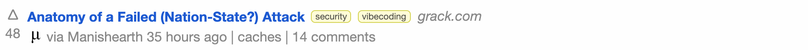
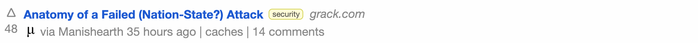
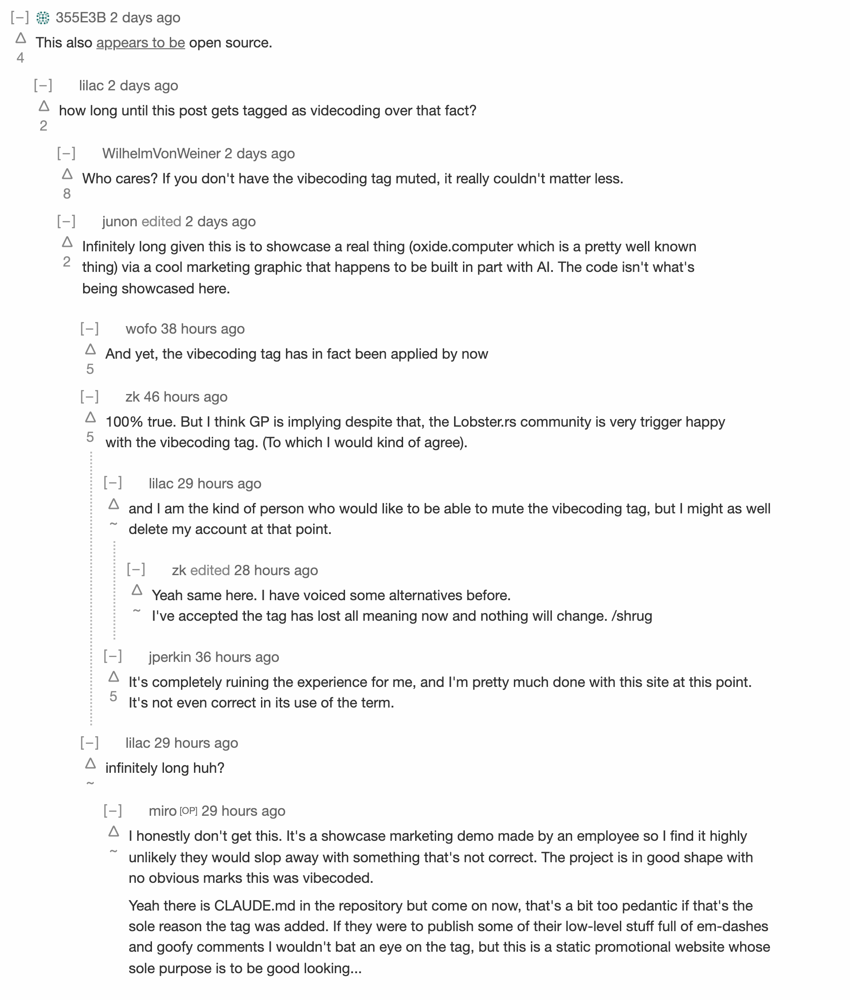
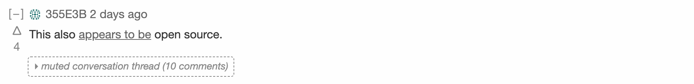
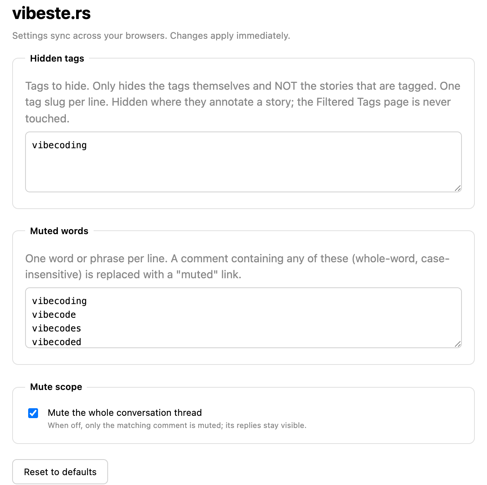

vibeste.rs
Have a quieter lobste.rs with this small, open-source browser extension that hides the vibecoding tag and mutes vibecoding comment threads.
Hides the “vibecoding” tag
The vibecoding tag is hidden wherever it annotates a
story (e.g. home and story pages). Only the tag itself is hidden, not
the tagged stories. The Filtered Tags settings page, and the tag’s own
page at /t/vibecoding (where you’ve asked to see it), are
left untouched.
Before

After

Mutes any conversation mentioning “vibecoding”
Any comment mentioning vibecoding (or its variants and
common misspellings) is collapsed into a
“muted conversation thread” link. Click it to read the
thread.
Before

After

Customizable rules
Choose which tags to hide, which words to mute, and whether to mute a whole comment thread or just the muted comment. Open the extension’s options page to change:
-
Hidden tags — one tag slug per line (default
vibecoding). - Muted words — one word or phrase per line, matched whole-word and case-insensitively.
- Mute scope — the whole thread (default) or only the matching comment.
Settings sync across your browsers and apply immediately, no reload needed.

Install
The extension works on Chrome, Firefox, and Safari from a single code base. While store listings are pending, you can build and load it yourself:
git clone https://github.com/altano/vibeste.rs
cd vibeste.rs
nix develop # or: corepack enable pnpm
pnpm install
pnpm build # Chrome → apps/extension/.output/chrome-mv3
pnpm build:firefox # Firefox → apps/extension/.output/firefox-mv2-
Chrome / Edge: open
chrome://extensions, enable Developer mode, and “Load unpacked” thechrome-mv3folder. -
Firefox: open
about:debugging→ This Firefox → “Load Temporary Add-on”, and pick any file infirefox-mv2. (Or runpnpm dev:firefox.) -
Safari: build with
pnpm build:safari, then wrap it with Apple’sxcrun safari-web-extension-converter— see the README.
Privacy
storage (for your
settings), and the code only ever runs on lobste.rs and
lobsters.dev. Nothing leaves your browser.
Why this exists
This extension is not a statement about the state of AI discourse. I
just want to stop seeing said discourse on
lobste.rs, specifically all
conversation around the experience-destroying
vibecoding tag, which seems to serve no population well
while flooding the site with pointless meta-debate.
A lot of people are tired of the status quo, and I have never seen a single subject result in so many comments from people saying that it is totally ruining their experience of the site, myself included:
It’s completely ruining the experience for me, and I’m pretty much done with this site at this point. It’s not even correct in its use of the term.
— jperkin, on “Oxide Rack 3D Explorer”
This tag has caused a lot of problems and I personally don’t like it. I’d be more supportive of getting rid of it than trying to further guide its use.
— adriano, on “Can we stop tagging every thing as vibecoding?”
… And then I come on here and see my own hand written articles, in my own voice, which tangentially touch on LLM stuff because - IT’S EVERYWHERE - only to be slapped with a “vibecoding” tag. Makes me wonder wtf I am doing. …
— LAC-Tech, on “Can we stop tagging every thing as vibecoding?”
… The worst part about this trend is that these people just add noise and distract from any interesting discussion. The whole threads turn into a debate of whether an em dash somebody spotted is proof that text was LLM generated. …
— Yogthos, on “Can we stop tagging every thing as vibecoding?”
May I also suggest, for the umpteenth time, FIXING THE TAG. The current definition is ungrammatical and ambiguous, and (depending on your personal interpretation) overbroad …
This is a bad Lobste.rs editorial policy that I have unsuccessfully argued against a few times …
— simonw, on “Can we stop tagging every thing as vibecoding?”
… the abuse of the vibecoding tag, the follow-up arguments that happen when it is abused and, even more so, the lack of comments from the moderators is… not what I expect.
(If I messed up quoting you above or you don’t want your quote here, just email me and I’ll take it down immediately.)
This extension just makes the noise disappear for those who’d rather get back to reading the stories.
A bonus side-effect would be to get some action taken by the lobste.rs volunteer moderation team to improve this situation, but that is hardly required or expected. I have great respect for these folks and don’t want to make their lives any harder.
AI Disclosure
In order to maximize any potential irony, this extension's source code is as AI-vibecoded as I could muster. All the prose on this website is hand-written because AI prose is still garbage as of today.